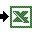

  <h2><strong>Relat&oacute;rios SAC </strong></h2>
  <p>Confira abaixo os relat&oacute;rios do SAC m&ecirc;s &agrave; m&ecirc;s:</p>
  <p>&nbsp;</p>
  <table width="100%" border="0" cellspacing="2" cellpadding="0">
    <tr>
      <td></td>
      <td><a href="relatorios/relat_SAC_mar2008.xls" class="linkconteudo"><strong>Relat&oacute;rio SAC - Mar&ccedil;o 2008</strong></a></td>
    </tr>
    <tr>
      <td width="4%"></td>
      <td width="96%"><a href="relatorios/relat_SAC_fev2008.xls" class="linkconteudo"><strong>Relat&oacute;rio SAC - Fevereiro 2008</strong></a> </td>
    </tr>
    <tr>
      <td></td>
      <td><a href="relatorios/relat_SAC_jan2008.xls" class="linkconteudo"><strong>Relat&oacute;rio SAC - Janeiro 2008</strong></a> </td>
    </tr>
  </table>
  <p>&nbsp;</p>
  <p align="right"><a href="#" id="lnk-voltar" class="linkvoltar">Voltar&nbsp;&nbsp;&nbsp;</a></p>
  <div align="right">
    <script type"text/javascript" src="js/voltar-relat.js"></script>
  </div>
